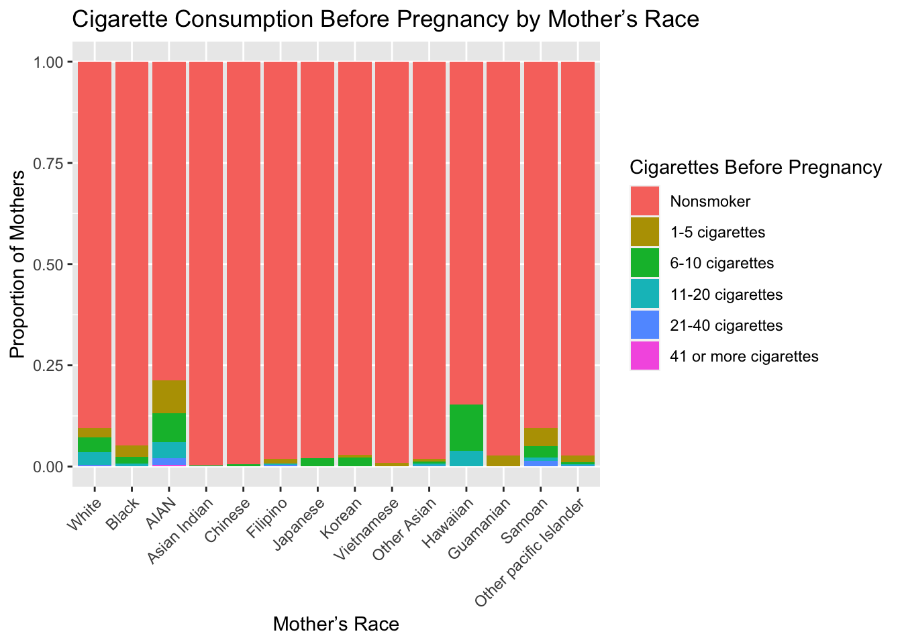

Rows: 100000 Columns: 170
── Column specification ────────────────────────────────────────────────────────
Delimiter: ","
chr (54): wic, cig_rec, rf_pdiab, rf_gdiab, rf_phype, rf_ghype, rf_ehype, r...
dbl (116): dob_yy, dob_mm, dob_tt, dob_wk, bfacil, f_facility, bfacil3, mage...
ℹ Use `spec()` to retrieve the full column specification for this data.
ℹ Specify the column types or set `show_col_types = FALSE` to quiet this message.
# Relabel mrace31 race_labels <-c("White (only)", "Black (only)", "AIAN (only)", "Asian (only)", "NHOPI (only)", "Black and White", "Black and AIAN", "Black and Asian", "Black and NHOPI", "AIAN and White", "AIAN and Asian", "AIAN and NHOPI", "Asian and White", "Asian and NHOPI", "NHOPI and White", "Black, AIAN, and White", "Black, AIAN, and Asian", "Black, AIAN, and NHOPI", "Black, Asian, and White", "Black, Asian, and NHOPI", "Black, NHOPI, and White", "AIAN, Asian, and White", "AIAN, NHOPI, and White", "AIAN, Asian, and NHOPI", "Asian, NHOPI, and White", "Black, AIAN, Asian, and White", "Black, AIAN, Asian, and NHOPI", "Black, AIAN, NHOPI, and White", "Black, Asian, NHOPI, and White", "AIAN, Asian, NHOPI, and White") natality_data_cleaned[, mrace31 :=factor(mrace31, levels =1:30, labels = race_labels)] natality_data_cleaned <- natality_data_cleaned[!is.na(mrace31) &!is.na(mager) &!is.na(dob_yy) &!is.na(dob_wk)] avg_age_by_year_week <- natality_data_cleaned[, .(average_age =mean(mager, na.rm =TRUE)), by = .(dob_yy, dob_wk)] # Adjust the code for counting occurrences of each race category combination race_counts_by_year_week <- natality_data_cleaned[, .N, by = .(dob_yy, dob_wk, mrace31)]; race_counts_by_year_week <-dcast(race_counts_by_year_week, dob_yy + dob_wk ~ mrace31, value.var ="N", fill =0) # Combine the two tables relationship_table <-merge(avg_age_by_year_week, race_counts_by_year_week, by =c("dob_yy", "dob_wk"), all =TRUE) # View the table print(head(relationship_table))
dob_yy dob_wk average_age White (only) Black (only) AIAN (only) Asian (only)
1: 2021 1 27.47972 4770 1901 251 217
2: 2021 2 27.89711 11588 3656 335 366
3: 2021 3 27.69921 12469 3904 367 392
4: 2021 4 27.68055 12171 3849 394 392
5: 2021 5 27.70826 12058 3839 356 366
6: 2021 6 27.80625 10334 3423 374 317
NHOPI (only) Black and White Black and AIAN Black and Asian Black and NHOPI
1: 103 91 4 4 3
2: 154 197 10 4 3
3: 155 211 11 7 2
4: 151 146 16 8 2
5: 144 196 9 9 2
6: 157 144 10 7 2
AIAN and White AIAN and Asian AIAN and NHOPI Asian and White Asian and NHOPI
1: 107 4 2 31 6
2: 157 2 0 61 6
3: 150 3 1 65 10
4: 134 5 0 56 6
5: 143 4 3 62 11
6: 143 3 2 51 1
NHOPI and White Black, AIAN, and White Black, AIAN, and Asian
1: 5 12 0
2: 6 4 0
3: 13 12 1
4: 6 10 1
5: 11 6 1
6: 9 9 0
Black, AIAN, and NHOPI Black, Asian, and White Black, Asian, and NHOPI
1: 0 3 0
2: 0 5 0
3: 0 4 0
4: 0 4 1
5: 0 2 0
6: 0 1 0
Black, NHOPI, and White AIAN, Asian, and White AIAN, NHOPI, and White
1: 0 3 0
2: 0 1 1
3: 1 4 3
4: 1 4 2
5: 0 2 1
6: 0 6 0
AIAN, Asian, and NHOPI Asian, NHOPI, and White Black, AIAN, Asian, and White
1: 0 2 0
2: 1 2 1
3: 0 6 1
4: 0 4 0
5: 0 2 1
6: 1 8 2
Black, AIAN, NHOPI, and White Black, Asian, NHOPI, and White
1: 1 0
2: 1 0
3: 0 0
4: 0 1
5: 0 1
6: 0 0
AIAN, Asian, NHOPI, and White
1: 1
2: 0
3: 1
4: 0
5: 2
6: 0
For the first table, we have chosen the ‘average_age’ across years and weeks (‘dob_yy’ and ‘dob_wk’) that could reveal seasonal patterns in maternal age (‘mrace31’). Moreover, it breaks down the numbers by race and ethnicity, indicating the number of births for different racial and ethnic combinations (White, Black, AIAN(American Indian or Alaska Native), Asian, NHPI(Native Hawaiian or other Pacific Islander), and combinations thereof). The average age of individuals seems around 29 for all entries and does not change much. Furthermore, the numerical values are highest for the ‘White (only)’ category and lowest for the combination of ‘Black’, ‘AIAN’, ‘Asian’, and ‘NHOPI’.
# Load necessary libraries library(ggplot2) library(dplyr) library(tidyr) # Read the dataset data <-read.csv(here::here('dataset-ignore','natality_data_cleaned.csv')) # Filter out unknown race and unknown smoking status filtered_data_new <- data[data$mrace15 !=15& data$cig0_r !=6, ] # Creating a cross-tabulation of mother's race and smoking before pregnancy race_smoking_crosstab <-table(filtered_data_new$mrace15, filtered_data_new$cig0_r) race_smoking_crosstab <-prop.table(race_smoking_crosstab, 1) # Normalize by row # Converting the table to a dataframe for ggplot df_new <-as.data.frame(race_smoking_crosstab) colnames(df_new) <-c('Race', 'Smoking', 'Proportion') # Renaming races and smoking categories for better readability df_new$Race <-factor(df_new$Race, levels =c(1:14), labels =c('White', 'Black', 'AIAN', 'Asian Indian', 'Chinese', 'Filipino', 'Japanese', 'Korean', 'Vietnamese', 'Other Asian', 'Hawaiian', 'Guamanian', 'Samoan', 'Other pacific Islander')) df_new$Smoking <-factor(df_new$Smoking, levels =c(0:5), labels =c('Nonsmoker', '1-5 cigarettes', '6-10 cigarettes', '11-20 cigarettes', '21-40 cigarettes', '41 or more cigarettes')) # Plotting the grouped bar chart ggplot(df_new, aes(fill=Smoking, y=Proportion, x=Race)) +geom_bar(position="fill", stat="identity") +theme(axis.text.x =element_text(angle =45, hjust =1)) +labs(x ="Mother’s Race", y ="Proportion of Mothers", fill ="Cigarettes Before Pregnancy", title ="Cigarette Consumption Before Pregnancy by Mother’s Race")

We chose the variable “cig0_r”, which represents cigarette consumption before pregnancy, and the variable “mrace15” which represents the mother’s race, to conduct the exploratory data analysis. We created a bar chart to see if is there a relationship between smoking habits before pregnancy and different races of mothers. The bar chart above displays the proportions of smokers among mothers before pregnancy vs. various races of mothers. We can see that 1. AIAN mothers have the highest proportion of smokers before pregnancy. Asian Indian, Chinese, Filipino, and Vietnamese mothers have the lowest proportion of smokers before pregnancy. 2. AIAN mothers have the highest proportion of 1-5 cigarettes and 41 or more cigarettes consumed per day before pregnancy among all races. Hawaiian mothers have the highest proportion of 6-10 cigarette consumption per day before pregnancy among all races. So there is a correlation between race and consumption of cigarettes before pregnancy.
The statistical model we choose is linear regression. We did linear regression to predict birth weight based on a number of variables such as mothers age, start of prenatal care, race and whether they smoked cigarettes before pregnancy. We fitted the model and plotted a scatter plot of observed by predicted. There is significant variation since the all of the points are not aggregated around the red line, indicating that transformations, such as log or other, should be made on the variables. However, a non-substantial amount of points aggregate around the line, indicating that the variables used in the predictor are capable of producing accurate predictions. Therefore, there is a slight correlation between birth weight and smoking status, mothers age, start of prenatal care and race.